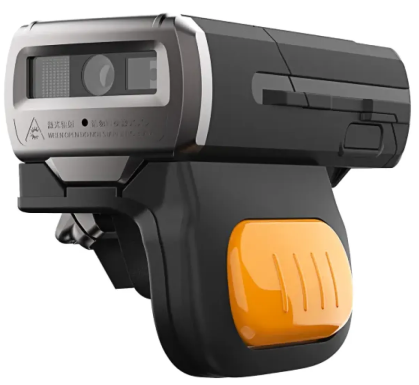
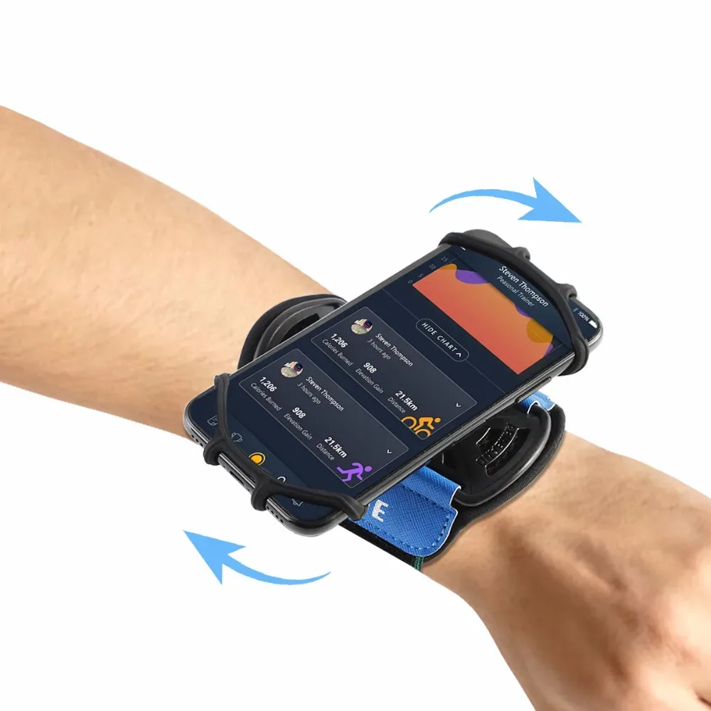

Операция "Сортировка"
Сортировка — это процесс распределения товаров, при котором товары сортируются для последующей доставки покупателям через пункты выдачи заказов (ПВЗ).
Оборудование, необходимое для работы на участке «Сортировка»
Для работы на участке "Сортировка" нам понадобится следующее оборудование:
-
Сканер Urovo SR5600
 -
Телефон на базе Android

-
Крепление (резинки)

* Сканер можно получить у старшего смены.
* С инструкцией по подключению сканера можно ознакомиться по ссылке.
Подготовка квадрата сортировки для работы
Перед началом работы на сортировке необходимо подготовить квадрат, на котором предстоит работать. Для этого необходимо:
- Убедиться, что на квадрате выставлены коробки для последующей сортировки товаров в них. Коробки должны быть размещены в три ряда, как показано на фото.
Коробки имеют условную нумерацию:
На первом уровне стеллажа – коробки с нечётным номером
Чуть выше – коробки, номер которых начинается с «37»
Также следует подготовить несколько тар, которые будут чисты как физически, так и программно.
Проверяем, нет ли в таре товара, после этого следует очистить её программно. Для этого воспользуемся Инструкцией по очистке тар.
После подготовки квадрата и очистки тар, переходим непосредственно к доставке товара к квадрату сортировки.
Начало работы на квадрате сортировки
После подготовки квадрата следует доставить тару с товаром с участка «Предсортировка». Определить порядковый номер тары, которая сортируется на нашем направлении, можно посмотрев на табличку, которая висит рядом с нашим квадратом сортировки.
Далее, чтобы приступить к работе, следует подключиться к нашему квадрату программно. Для этого открываем приложение WMS, переходим в модуль «Сортировка» > «Сортировка в коробки по ПВЗ».
После этого сканируем QR квадрата сортировки, на котором будем работать. Найти его можно на табличке с номером направления.
К экрану с появившимся вопросом вернёмся чуть позже.
После этого берём пустую тару, очищенную ранее, идём к квадрату предсортировки и ищем тару с порядковым номером 7.
Нумерация тар на предсортировке выглядит следующим образом:

Если в таре №7 имеются товары, сообщаем сотруднику, работающему на квадрате, что тару №7 необходимо отвязать. Взамен отвязываемой тары отдаем ему тару очищенную нами ранее.
После этого на экране с вопросом нажимаем «ДА». На экране будут отображены четыре последние цифры тары, которую необходимо взять в работу. Как правило, это и есть наша отвязанная тара. Сравниваем номера и катим её к нашему квадрату сортировки.

Сканируем номер тары, затем снова QR квадрата сортировки, и снова номер тары. После этого увидим экран, который свидетельствует о том, что можно приступать к непосредственной сортировке товара на квадрате.
Процесс сортировки товаров
На каждой коробке должен быть наклеен стикер с QR-кодом передачи. На начальном этапе сортировки коробки стоят без них. Расклейка QR-кодов с передачами на коробки выполняется последовательно в процессе сортировки товара.
Для того, чтобы распечатать QR передачи, необходимо взять товар из тары, найти на нём ВБ стикер и отсканировать его.

На экране телефона увидим номер коробки, в которую следует положить товар.
Если на коробке ещё нет QR кода передачи, следует отсканировать QR на принтере, который после этого распечатает стикер с необходимой передачей.
Клеим полученный из принтера стикер на коробку согласно условной нумерации.
После этого сканируем QR наклеенной передачи и кладём товар в коробку.
Процедуру «расклейки передач» следует проделать со всеми коробками в процессе сортировки. Если при сканировании ВБ стикера товар просится в коробку с уже распечатанной передачей, необходимо вложить товар в коробку с требуемым номером и отсканировать QR передачи на этой коробке.
Частные случаи, возникающие в процессе работы на сортировке
-
Ошибка при сканировании ВБ стикера
При сканировании ВБ стикера на товаре, на экране появляется ошибка. Данная ошибка свидетельствует о том, что товар был ошибочно отсортирован в тару вашего направления на предсортировке. Для такой категории товаров на квадрате сортировки должна иметься отдельная коробка (отнести на предсорт), в которую нужно класть товар для последующей передачи его вновь на предсортировку. Такой товар принято называть «Волна». -
Отображение «Ъ» (твёрдый знак)
При сканировании ВБ стикера на товаре, на экране вместо номера передачи, в которую следует положить вещь, отображён «Ъ» (твёрдый знак). В таком случае необходимо с данным товаром подойти к старшему и следовать его дальнейшим указаниям. -
Товар без ВБ стикера
В процессе сортировки был обнаружен товар без ВБ стикера. В таком случае следует обработать сортируемую тару полностью, и, если найден пустой пакет, в котором предположительно мог лежать товар, подойти с ним к старшему. В случае, если пакет не найден, нужно обратиться к старшему и предоставить ему номер тары, в которой найден товар и сам товар. -
Повреждение стикера с QR кодом передачи
В процессе работы стикер с QR кодом передачи переклеился на товар, затерялся либо повредился. Для того, чтобы переделать передачу, необходимо взять вещь из коробки, QR код передачи которой повреждён, и обратиться к старшему.!Важно! При возникновении сомнений, что передача действительно была открыта ранее, следует отсканировать QR принтера. Если передача была открыта ранее, на экране отобразится ошибка.
После сортировки всех вещей из тары следует снова взять очищенную нами ранее тару и повторить процесс доставки товара с предсортировки к нашему квадрату.